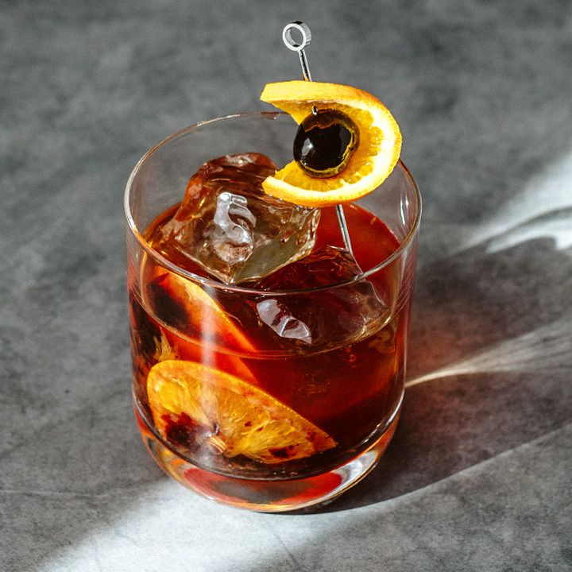

Old Fashioned

Description
The old fashioned is a cocktail made by muddling sugar with bitters and water, adding whiskey, and garnishing with an orange slice or zest and a cocktail cherry. It is traditionally served with ice in an old fashioned glass.
Ingredients:
- 2 Teaspoons simple syrup
- 1 teaspoon water
- 2 dashes bitters
- 1 cup ice cubes
- 1 (1.5 fluid ounce) jigger bourbon whiskey
- 1 slice orange
- 1 Maraschino cherry
Steps:
- Pour simple syrup, water and bitters into a whiskey glass
- Stir and combine
- Add one large ice cube and then gently pour bourbon in
- Garnish with Orange slice and maraschino
- And that's it! Sweet and simple!